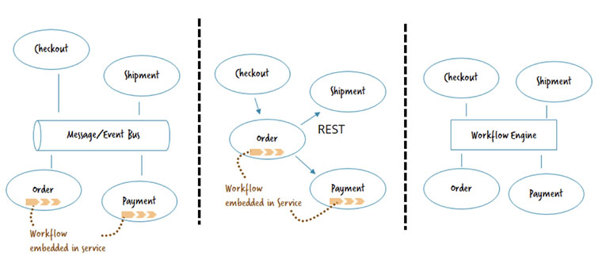
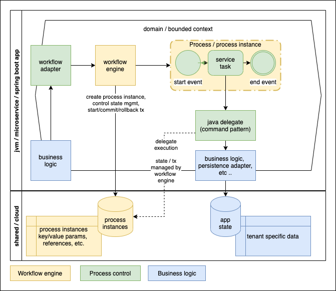

### Flow Code "It is not the beauty of a building you should look at; its the construction of the foundation that will stand the test of time." ― David Allan Coe // Name: Jukka Nikki, Identity: Programmer, Since: 6502 // TODO: Codeneering - reaching higher level of abstraction
### Camunda: company - Initially Berlin based consulting company - First workflow engine "Camunda" based on Activity fork with DB for coordination - Second workflow engine "Zeebe" with Kafka / Streams for coordination - Developer friendly approach to workflows
## Technology
#### What problem it solves? “You won’t appreciate the true horror, pain and suffering of microservices until you’re running them in production" ― Sam Newman
### Zeebe <img alt="zeebe" src="images/zeebe_architecture.png" width="100%"> This stuff scales - 1.0.0 - 11 May 2021
### Camunda <img alt="zeebe" src="images/camunda_architecture.png" width="50%"> This stuff works - since 2010
#### Typical usecases  1. Asynchronous communication by commands and events — normally using a message or event bus 2. Point-to-point communication by request/response — often REST 3. Work distribution by workflow engine
## Embedded microservices workflow engine
### what about accidental complexity? "although this isolation can add some overhead, the resulting simplicity makes our distributed system much easier to reason about." ― Sam Newman
#### Embedded Process Engine (Microservice) "The process engine is added as an application library to a custom application. This way, the process engine can easily be turned on or off with the application lifecycle. It is possible to run multiple embedded process engines on top of the same shared database." Same jvm with app instance, shared database
#### java delegate import org.camunda.bpm.engine.delegate.DelegateExecution; import org.camunda.bpm.engine.delegate.JavaDelegate; public class ProcessRequestDelegate implements JavaDelegate { public void execute(DelegateExecution execution) throws Exception { var customerId = execution.getVariable("customerId") .. } } Command Pattern, original GoF goodies
#### BPMN / Camunda simplified  start process, wait process to orchestrate calls
### Camunda toolset <img alt="camunda ecosystem" src="images/camunda_ecosystem.png" width="80%"> model -> execute -> observe -> optimize
## Business agility
#### is it part of evolutionary architecture? “Once launched into production, our software will continue to evolve as the way it is used changes. For most things we create, we have to accept that once the software gets into the hands of our customers we will have to react and adapt, rather than it being a never-changing artifact. Thus, our architects need to shift their thinking away from creating the perfect end product, and instead focus on helping create a framework in which the right systems can emerge, and continue to grow as we learn more.” ― Sam Newman
#### DigitalOps "enables rapid transformation by integrating humans and systems through the direct execution of process, decision and event models to automate business operations. It focuses on the dynamic combination and extension of component models, exploiting both choreography and orchestration aspects of process automation" - Gartner Hype Cycle for EA, 2021
#### Before Camunda ".. business processes of several organizations were manual or only partially automated using legacy digital process automation (DPA) suites, making them slow, inefficient, inconsistent, and disorganized. As a result, the enterprises found they were burdened with subpar customer service, and their employees were left frustrated by the time it took to accomplish common tasks." - Forrester, 2021
#### Pitfalls, Solutions & TCO [The Role of the Workflow Engine](https://camunda.com/blog/2020/02/the-microservices-workflow-automation-cheat-sheet-the-role-of-the-workflow-engine/) [3 Common Pitfalls in Microservice Integration & How to Avoid Them](https://berndruecker.io/3-pitfalls-in-microservice-integration/) [DigitalOps - agile & continous process improvement](https://camunda.com/blog/2021/09/gartner-reports-the-rise-of-digitalops/) [Forrester Camunda TCO report](https://camunda.com/press_release/study-camunda-can-deliver-389-roi-with-end-to-end-process-automation/)